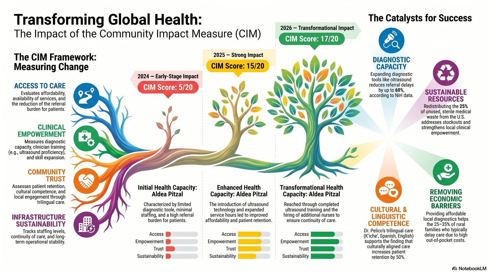

Impact
How PAMA measures what it delivers, and why it matters.
Solidarity Supply Index (SSI)
The Solidarity Supply Index (SSI) is PAMA’s hemispheric framework for evaluating the ethical reach, logistical integrity, and clinical relevance of transnational medical aid delivered to underserved communities. Developed between 2022 and 2025 and refined through field deployment by our Solidarity Medical Impact Teams (SMITs), the SSI transforms humanitarian logistics into a transparent, data‑driven public‑health metric.
The SSI evaluates three core domains:
- Scarcity — how urgently a region needs the supplies delivered
- Ethical Delivery — chain‑of‑custody integrity, documentation, and transparency
- Relevance — clinical appropriateness and alignment with frontline needs
Each domain is scored on a 0–10 scale, producing a composite SSI score that classifies shipments from Minimal to High‑Impact.
A Data‑Driven Model of Solidarity (2024–2026)
Between 2024 and 2026, PAMA’s Caribbean operations became the largest and most rigorously documented humanitarian medical‑supply effort. The SSI captured this evolution with precision:
| Period | Supplies delivered | SSI score | Notes |
|---|---|---|---|
| 2026‑Q1 | $2.23 million | 8.7 | Mixed medical and surgical supplies delivered despite geopolitical and logistical constraints; High‑Impact, with recommendations to further tighten chain‑of‑custody documentation. |
| 2025 Annual | $1.95 million | 9.2 | Across all deployments, reflecting consistent excellence in scarcity targeting and relevance. |
| 2025‑Q4 | $1,000,000 | 9.3 | The largest single shipment of the year (13 pallets); High‑Impact, with recommendations to strengthen lab‑capacity documentation and assign fair‑market value to all items. |
| 2025‑Q2–Q3 | $520,000 | 9.3 | A 13‑pallet deployment supported by improved pallet‑level documentation and PAHO‑aligned prioritization of IV fluids and electrolytes. |
| 2025‑Q1 | $433,000 | 9.0 | 10/10 Scarcity, 8/10 Ethical Delivery and 9/10 Relevance; High‑Impact. |
These results demonstrate that even under conditions of fuel shortages, sanctions, port delays, and administrative barriers, PAMA maintained one of the highest‑performing ethical supply chains in the region.
Why the SSI Matters
The SSI is more than a logistics score—it is a public‑health accountability tool that ensures every shipment:
- Responds to verified scarcity
- Upholds ethical transparency
- Strengthens clinical capacity
- Aligns with PAHO and WHO priority gaps
- Documents chain‑of‑custody integrity
- Produces measurable, replicable impact
By quantifying solidarity, the SSI allows PAMA to demonstrate not only what was delivered, but why it mattered, who it reached, and how it strengthened health systems across the Americas.
A Replicable Model for Hemispheric Health Equity
The upward trajectory of the SSI—from its early development to its 2025–2026 high‑impact performance—reflects PAMA’s commitment to:
- Transparent humanitarian logistics
- Cross‑border coalition building
- Ethical medical‑supply redistribution
- Evidence‑based public‑health planning
- Measurable, community‑centered impact
The SSI now serves as a regional benchmark for ethical medical‑supply mobilization and a model for organizations seeking to build solidarity‑driven, data‑verified humanitarian systems.
Read more about the SSICommunity Impact Measure (CIM)
PAMA’s Equity in Action initiative strengthens diagnostic access and clinical capacity in underserved communities by pairing medical‑supply mobilization with workforce development and ethical digital infrastructure. Through the deployment of ultrasound systems, hands‑on clinician training, and the integration of transparent EMR platforms, local providers gain the tools needed for early detection, maternal‑fetal monitoring, emergency triage, and chronic‑disease management directly within their communities.
Beginning in Aldea Pitzal, Guatemala, PAMA has supported clinicians like Dr. Eliseo Pelico, who now delivers 24‑hour urgent care in K’iche’, Spanish, and English. His expanded diagnostic skills, including ultrasound training, reduced referral delays and increased affordability for families who previously traveled hours to reach Guatemala City. As his practice grew, he hired additional nurses, expanded service hours, and strengthened continuity of care — all measurable improvements in community health readiness.
To ensure accountability and scientific rigor, PAMA evaluates progress using the Community Impact Measure (CIM), a four‑domain metric that tracks Access to Care, Clinical Empowerment, Community Trust, and Infrastructure Sustainability. The CIM provides a transparent, year‑over‑year assessment of how local capacity grows, how communities engage with care, and how diagnostic equity evolves over time. By 2026, the CIM demonstrated transformational impact, reflecting expanded staffing, improved diagnostic capability, and sustained community trust.
Together, these efforts form a replicable model of hemispheric health equity rooted in solidarity, transparency, and measurable transformation — ensuring that every intervention strengthens local autonomy and prepares clinics for long‑term research and clinical collaboration.

Explore the Aldea Pitzal program Read field reports on the blog